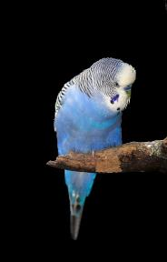
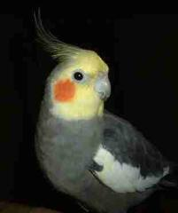
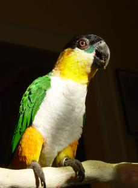

Investigating Speech: an African
Grey Parrot Speaking Italian.
Grey Parrot Speaking Italian.
| Investigating Italian vowel sounds and simple Italian words. |
Studies with parrots by Pepperberg in the United States and by Lenti-Boero, Masin, et al. in Italy indicate
that humans perceive speech by parrots well. These studies appear to have a high degree of agreement
among listeners for recordings of parrot speech.
It is important to determine whether bird owners and others possess the same ability to recognize the words
spoken by unfamiliar talking birds as the researchers. Dr. Masin provided samples for me to use in trying to
determine whether Americans understand vowel sounds and simple words spoken by an Italian-speaking
parrot. The subject under investigation was an African Grey parrot.
In this experiment, listeners evaluate a series of very short sound clips with portions of words spoken by the
parrot which have been edited to isolate the vowel sounds from the word. The listener is asked to identify the
vowel as A, E, I, O, or U for seven of the clips. Three clips have repetitions of a word or a series of common
Italian words that a child might know as spoken by the Grey parrot. The task of willing listeners is to identify
the vowels and the words spoken on the clips.
If you are willing to listen and determine what you think the bird is saying, I would appreciate receiving your
answers to add to my data. I encourage participants to write in a phonetic representation for what they hear in
the event that you do not distinctly recognize the vowel or word. For example, if you hear the vowel “A” and it
sounds like “Ahhh” or the "A" in "at" write that on your answer sheet. If you heard a vowel that sounds like
the long vowel “A” in English, you could so indicate by listing a word with the sound you heard (your example
might be “slate”).
An answer sheet is provided below. [You can listen to the clips as many times as you like, and you can consult
with others in your household to arrive at your final result. One submission per household unless done
independently without any conferencing or discussion.]
that humans perceive speech by parrots well. These studies appear to have a high degree of agreement
among listeners for recordings of parrot speech.
It is important to determine whether bird owners and others possess the same ability to recognize the words
spoken by unfamiliar talking birds as the researchers. Dr. Masin provided samples for me to use in trying to
determine whether Americans understand vowel sounds and simple words spoken by an Italian-speaking
parrot. The subject under investigation was an African Grey parrot.
In this experiment, listeners evaluate a series of very short sound clips with portions of words spoken by the
parrot which have been edited to isolate the vowel sounds from the word. The listener is asked to identify the
vowel as A, E, I, O, or U for seven of the clips. Three clips have repetitions of a word or a series of common
Italian words that a child might know as spoken by the Grey parrot. The task of willing listeners is to identify
the vowels and the words spoken on the clips.
If you are willing to listen and determine what you think the bird is saying, I would appreciate receiving your
answers to add to my data. I encourage participants to write in a phonetic representation for what they hear in
the event that you do not distinctly recognize the vowel or word. For example, if you hear the vowel “A” and it
sounds like “Ahhh” or the "A" in "at" write that on your answer sheet. If you heard a vowel that sounds like
the long vowel “A” in English, you could so indicate by listing a word with the sound you heard (your example
might be “slate”).
An answer sheet is provided below. [You can listen to the clips as many times as you like, and you can consult
with others in your household to arrive at your final result. One submission per household unless done
independently without any conferencing or discussion.]
«- You are here:
Speech Investigation
Speech Investigation
The sound clips appear below. Please listen to them in numerical
order for consistency and to avoid errors. You may listen to the
sounds as many times as you need to provide an answer.
order for consistency and to avoid errors. You may listen to the
sounds as many times as you need to provide an answer.
Do people understand speech by a bird with
which they are unfamiliar?
Help with research (below) attempting to learn
more about human perception of unfamiliar
and/or spontaneous speech by a talking bird.
Are human beings good at listening to parrots?
Participate in the listening test below.
What about other species of parrots?
Do you have a recording of a bird speaking
that you do not understand? If so, please
contact me.
Do you know someone interested in speech by
talented talking birds?
Please pass this page to your friend.
which they are unfamiliar?
Help with research (below) attempting to learn
more about human perception of unfamiliar
and/or spontaneous speech by a talking bird.
Are human beings good at listening to parrots?
Participate in the listening test below.
What about other species of parrots?
Do you have a recording of a bird speaking
that you do not understand? If so, please
contact me.
Do you know someone interested in speech by
talented talking birds?
Please pass this page to your friend.
| Arielle understands speech and speaks thoughtfully using English words, phrases, and sentences. |



Clip 1
Clip 4
Clip 3
Clip 2
Clip 5
Clip 6
Clip 7
Clip 8
Clip 9
Clip 10
Click here for answer sheet The document is in WORD 97-2003 format and will load on most computers |